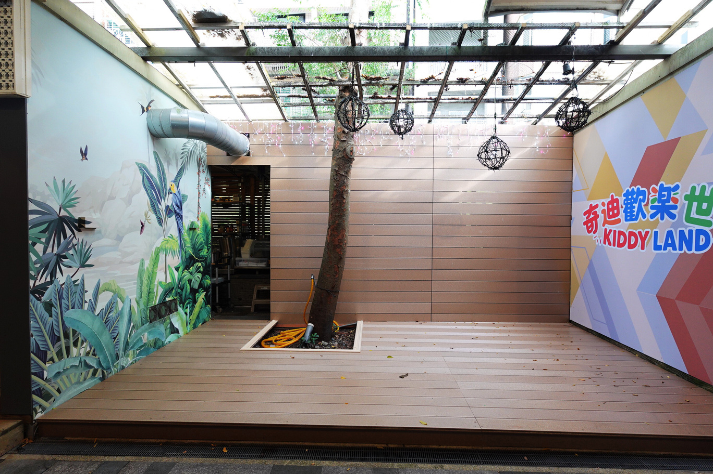
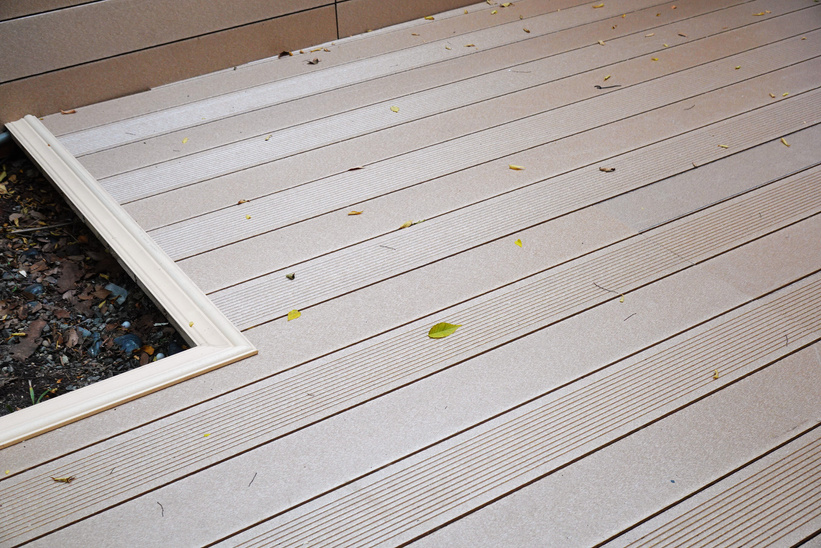
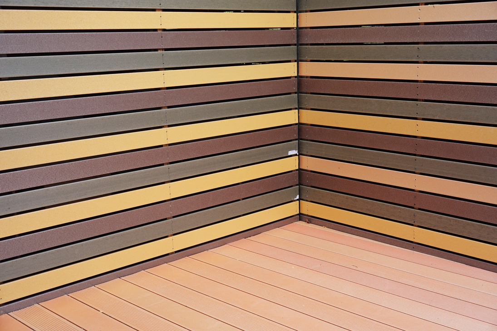

哪些部位要用材料？
牆面、平台與收邊分開列出，提供各部位尺寸及數量。
SHUIWAN / COMMERCIAL APPLICATION
當牆面與平台出現在同一個空間，材質、排列與轉角便成為整體設計的一部分。水灣的材料應用紀錄，讓商業空間選材有具體的觀察部位。
提出相關需求 ↗閱讀產品目錄 ↗
水灣實拍呈現板面排列、平台與周邊收邊。材料在這裡參與空間的外觀；從整體走向局部，能把選材需求落在接縫、排列與固定位置。



牆面、平台與收邊分開列出，提供各部位尺寸及數量。
確認直向或橫向排列、分割、接縫與轉角，連同色系和表面一起討論。
提供既有基底、固定配置與工程分工，再確認材料與加工範圍。
影像來源：捷綠盟 2025 產品目錄 P16–17 與企業提供應用照片。本頁呈現材料應用紀錄；實際供應型號、數量、加工方式及施工角色，依原專案資料確認。相似外觀不代表同一材料或固定系統。
查看官網完整相簿 ↗提供已知資料即可；表單會帶入本頁來源，郵件草稿仍需自行確認送出。